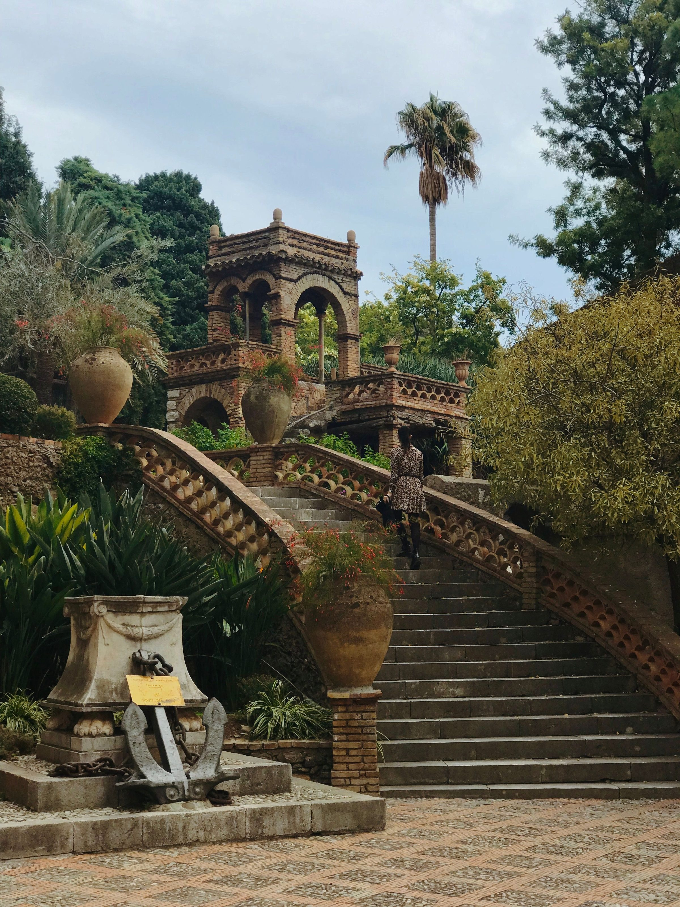
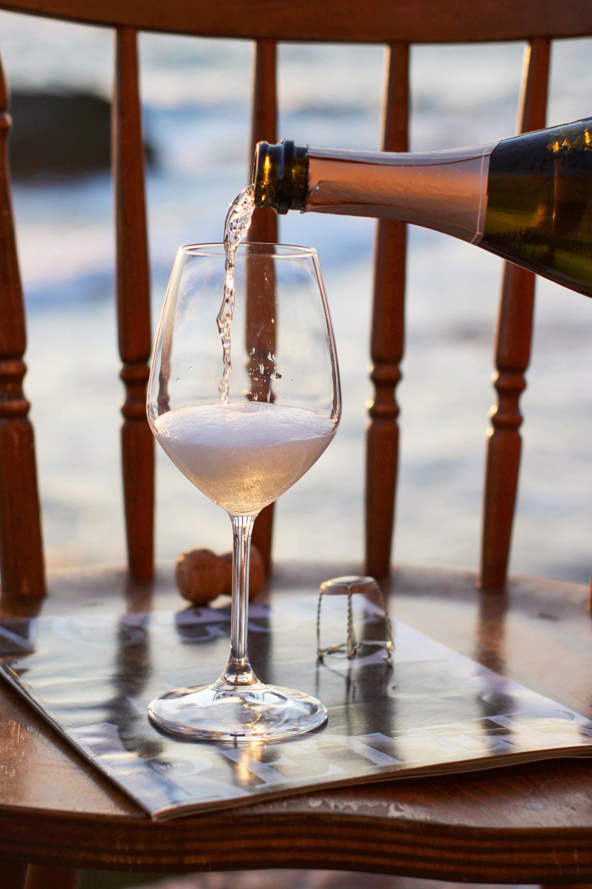

VERONICA
BONELLI
Taormina · Sicily · The WorldTaormina · Sicilia · Il Mondo
Sicilian soul.
International standard.
Anima siciliana.
Standard internazionale.
From the slopes of Etna to the tables of Taormina, wine becomes a way of understanding a place — its landscape, its people, its stories. Dalle pendici dell'Etna alle tavole di Taormina, il vino diventa un modo di comprendere un luogo — il suo paesaggio, la sua gente, le sue storie.

A sense of place, poured into every glass. Un senso del luogo, versato in ogni calice.
Wine is never only what is in the glass. It is landscape, memory, hospitality — and the people who bring it to life. Il vino non è mai solo ciò che si trova nel calice. È paesaggio, memoria, ospitalità — e le persone che lo portano in vita.
Based at Grand Hotel Timeo, Sicily is not simply a destination. It is a point of view. Con base al Grand Hotel Timeo, la Sicilia non è semplicemente una destinazione. È un punto di vista.
Wine is meant to be experienced.Il vino è fatto per essere vissuto.
01 — 03Private TastingsDegustazioni Private
A closer encounter with remarkable wines and the stories behind them.Un incontro ravvicinato con vini straordinari e le storie che li accompagnano.
Wine PairingsAbbinamenti
The dialogue between wine, cuisine, ingredients and atmosphere.Il dialogo tra vino, cucina, ingredienti e atmosfera.
Masterclasses & EventsMasterclass ed Eventi
Curated moments for guests, teams and wine enthusiasts.Momenti curati per ospiti, team e appassionati di vino.
Wine should never be experienced in isolation. A great bottle has a story. A great pairing creates a dialogue. A great experience stays with you. Il vino non dovrebbe mai essere vissuto in isolamento. Una grande bottiglia ha una storia. Un grande abbinamento crea un dialogo. Una grande esperienza rimane.
Sicily, from the inside.La Sicilia, dall'interno.
A volcanic island. Ancient landscapes. Mediterranean light. At its heart, Etna. Un'isola vulcanica. Paesaggi antichi. Luce mediterranea. Al suo centro, l'Etna.
For Veronica, Sicily is essential to how wine is understood, shared and remembered. Per Veronica, la Sicilia è essenziale al modo in cui il vino viene compreso, condiviso e ricordato.